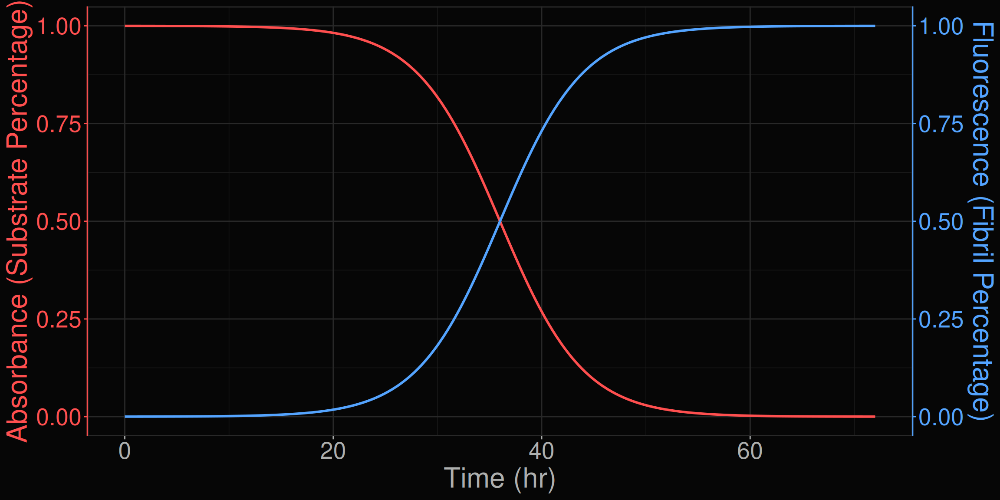

Codename: HAL-QuIC
An R project for the kinetic modeling of the RT-QuIC assay
Introduction
What is RT-QuIC?
Real-Time Quaking-Induced Conversion (RT-QuIC) is a member of the highly sensitive assays known as seed amplification assays (SAA) used to detect misfolded prion proteins (PrPSc) in a sample [1]. A small amount of seed material, typically brain or lymph node homogenate, is incubated with a recombinant substrate prion protein (PrPC) under semi-continuous agitation. When prion seeds are present, they template the misfolding of the substrate, forming amyloid aggregates. These aggregates are measured in real time via thioflavin T (ThT) fluorescence, producing a sigmoid curve characteristic of many nucleated self-assembly reactions [2].
Prion Fibril Kinetics
The sigmoidal curve is the focus of this project given that, in typical enzyme kinetics, a sigmoid would indicate a co-operative binding effect between PrPSc and PrPC; however, the linear nature of protein fibrils wouldn’t explain the allosteric requirements of such a model. [3] proposed that a nucleated polymerization model would more accurately account for the linear structure of PrPSc while also being simpler to fit.
ThT is commonly used to detect the presence of amyloid fibrils in SAAs, but it is not necessarily a direct indicator of the amount of fibrils present [4]. A standard curve could be generated using a known amount of PrPSc, however [5] approached the problem by combining UV-vis spectroscopy and ThT fluorescence such as in Figure 1; the absorbance would be a more accurate measure of the amount of available substrate, while the ThT fluorescence would serve as the evidence of fibril formation.

It is well-known that generally, higher concentrations of initial seed material lead to a faster reaction, but the overall signal intensity or the steepness of the inflection point may be influenced by other factors. The predominant theory involves a two-step kinetic model, where the first step is the nucleation of a monomer into a fibril, and the second step involves elongation of the fibril [6].
The Model
Standard RT-QuIC analysis focuses on a single kinetic metric, the lag time to threshold (i.e. rate of amyloid formation, RAF). However, normalized fluorescence traces frequently exhibit a second kinetic phase — a dampening effect following the initial growth phase — that is poorly captured by single-sigmoidal models. The underlying function is named fit_model() and is described in more detail in the model page.
HAL-QuIC proposes that the full kinetic behavior of an RT-QuIC reaction can be better described by the sum of two logistic functions:
\[ f(t)=\frac{S_1}{1+e^{a_1(b_1-t)}}+\frac{S_2}{1+e^{a_2(b_2-t)}} \]
Each sigmoid has three parameters:
| Parameter | Meaning |
|---|---|
| \(S\) | Asymptote |
| \(a\) | Steepness of the inflection point |
| \(b\) | Time to inflection point |
Together, these six coefficients \((S_1, a_1, b_1, S_2, a_2, b_2)\) provide a compact kinetic fingerprint for any RT-QuIC reaction.
References
1.
Atarashi R, Satoh K, Sano K, et al (2011) Ultrasensitive human prion detection in cerebrospinal fluid by real-time quaking-induced conversion. Nature Medicine 17(2):175–178. https://doi.org/10.1038/nm.2294
2.
Ferrone FA (1999) [17] analysis of protein aggregation kinetics. Methods in enzymology on CD-ROM/Methods in enzymology 309:256–274. https://doi.org/10.1016/s0076-6879(99)09019-9
3.
Masel J, Jansen VAA, Nowak MA (1999) Quantifying the kinetic parameters of prion replication. Biophysical Chemistry 77(2-3):139–152. https://doi.org/10.1016/s0301-4622(99)00016-2
4.
LeVine H (1999) [18] quantification of β-sheet amyloid fibril structures with thioflavin t. Methods in enzymology on CD-ROM/Methods in enzymology 309:274–284. https://doi.org/10.1016/s0076-6879(99)09020-5
5.
Lee C, Nayak AK, Sethuraman A, Belfort G, McRae GJ (2007) A three-stage kinetic model of amyloid fibrillation. Biophysical Journal 92(10):3448–3458. https://doi.org/10.1529/biophysj.106.098608
6.
Arosio P LS Knowles TP (2015) On the lag phase in amyloid fibril formation. Phys Chem Chem Phys 17(12):7606–7618. https://doi.org/10.1039/c4cp05563b
Citation
BibTeX citation:
@online{rowden,
author = {Rowden, Gage},
title = {Codename: {HAL-QuIC}},
url = {https://modeling.gagerowden.com},
langid = {en}
}
For attribution, please cite this work as:
Rowden G Codename: HAL-QuIC. https://modeling.gagerowden.com